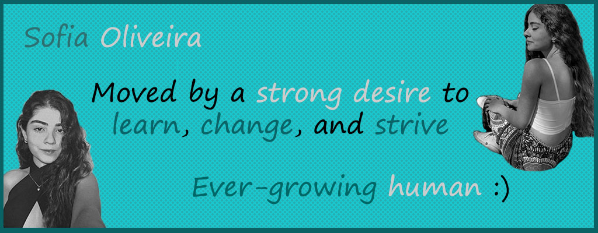

I am a Brazilian senior high-schooler passionate about Science, Education, and Politics.
My main interests are youth leadership projects, networking opportunities, and global experiences.
If I had to describe myself in three words, I would choose resilient, determined, and ambitious.
My experiences include:
Ever-growing human, looking forward to expanding my knowledge and comprehension of people and the world.
What grabbed my attention to IT Girls was the possibility to learn more about technology, such an important topic nowadays, while meeting many incredible women and having lots of fun! I hope to deepen my understanding of information and how we can use technology to share insightful ideas and promote positive social impact.
In my free time, I really enjoy watching dystopian movies and series (I'm a huge fan of The Walking Dead and The 100), playing with my dog, taking pictures, participating in projects, or reading literally any kind of book (although I especially like crime fiction).